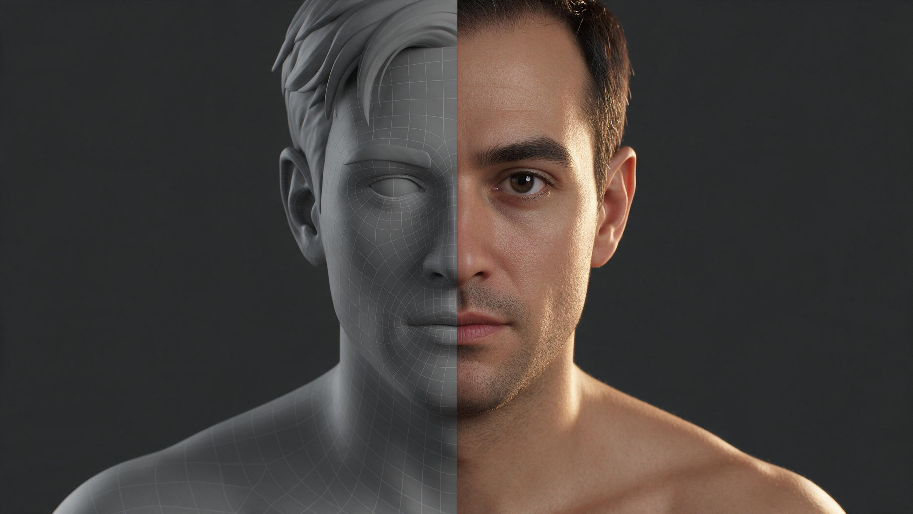
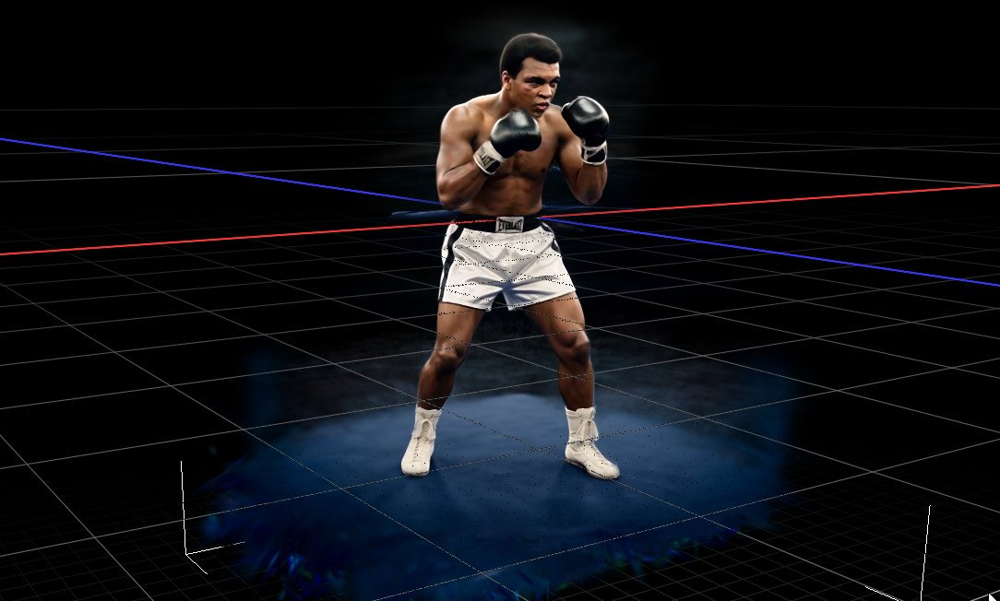
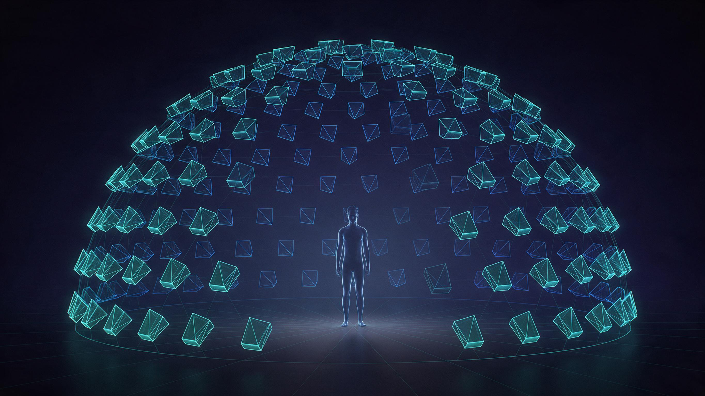
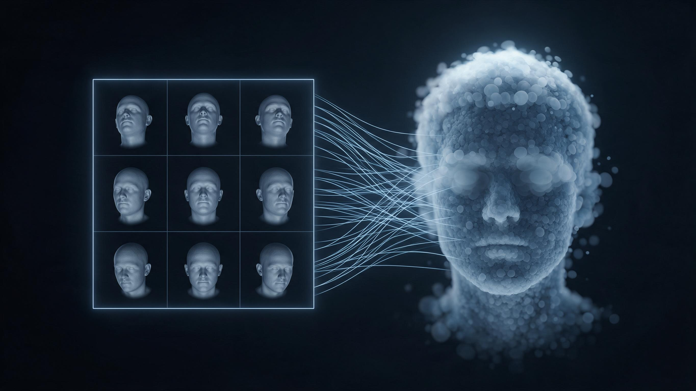

- What the Ali test proved
- Pipeline
- What the synthetic dome gives us
- The V2V likeness layer
- The central risk: multi-view consistency
- Reconstruction approach
- 4DGS training landscape
- Sizing
- Pilot
- Open decisions
- Sources
We build a photoreal volumetric character by splitting the likeness problem in two: a mocap-driven MetaHuman carries roughly 75% of it, and a video-to-video AI pass with a trained character LoRA supplies the remaining 25%. The capture rig is synthetic — instead of filming a real performer in a physical camera dome, we render a dome of virtual cameras around the animated character in Unreal Engine. Those renders go through the V2V layer, and the enhanced multi-view footage is what we reconstruct into a Gaussian splat.

This inverts the usual volumetric video problem. Conventional 4D Gaussian Splatting spends most of its effort recovering geometry and motion from imperfect real footage. Here geometry and motion are already exact and free — the open question is whether the AI appearance layer agrees with itself across viewpoints.
What the Ali test proved
We have run a reduced version of this pipeline: a Muhammad Ali reconstruction over a 360° turnaround of synthetic H3 data, one camera orbit, using prompted rather than guided conditioning. It turned out well.

That result is the reason this project is worth building, and it sets the baseline:
- A single orbit was enough to reconstruct from. We did not need a dense dome to get a usable result.
- The source data was synthetic, so the same render-then-enhance ordering already worked end to end.
- Conditioning was prompted only. There was no depth, normal or ID guidance holding the AI to the underlying geometry, and no LoRA locking the identity.
The headroom is in exactly those two gaps. Adding a well-trained character LoRA plus guided conditioning and a mixed denoise schedule should raise cross-view stability well above what the Ali test achieved, because both changes reduce how much the model is free to invent per frame. The working assumption is that a good LoRA alone gets flickering down to a minimal level — but that assumption is untested at dome density and with a moving subject.
Pipeline
Six stages, from mocap to a playable volumetric asset. The appearance branch carries all the risk; the geometry branch comes straight out of the renderer and is essentially free and exact.
- Mocap drives the MetaHuman rig in Unreal.
- Dome render through Movie Render Queue: beauty pass per camera, plus depth, normal and object-ID AOVs, on a transparent background.
- V2V pass applies the character LoRA to each camera's footage, conditioned on that camera's AOVs.
- Dataset assembly converts Unreal camera transforms directly into
transforms.jsonor COLMAP text files. No structure-from-motion step. - Training fits either a mesh-bound Gaussian avatar or a generic 4DGS model.
- Delivery to a viewer, engine or headset.
What the synthetic dome gives us
Every item below is a problem that physical volumetric capture rigs spend real money solving, and that we get as a side effect of rendering.

| Asset | How we get it | What it replaces |
|---|---|---|
| Exact camera intrinsics and extrinsics | Exported from Sequencer / Movie Render Queue | The whole COLMAP + GLOMAP stage, and all its failure modes |
| Perfect frame sync | Rendered, not filmed | Genlock hardware, timecode, rolling-shutter correction |
| Alpha mattes | Transparent-background render | SAM or greenscreen keying per frame |
| Depth, normal and object-ID passes | AOVs from the same render | Monocular depth estimation, and the conditioning for the V2V pass |
| Exact per-frame mesh | The MetaHuman itself | The motion half of 4D reconstruction |
| Arbitrary camera count and placement | A parameter, not a purchase | An $80k physical rig |
Two consequences worth calling out. The alpha mattes drop straight into an existing nerfstudio invocation, which already accepts --masks-path masks. And because the per-frame mesh is exact, generic 4DGS would be solving for motion we already know.
Three coordinate conventions meet in this pipeline and none of them agree. Unreal is Z-up left-handed with X forward. nerfstudio uses OpenGL — +X right, +Y up, +Z pointing back, so −Z is the look-at direction. COLMAP uses OpenCV, with Y and Z flipped relative to nerfstudio.
Getting the conversion wrong produces a splat that trains without error and looks like mush, mirrored, or inside out. Verify on a single static frame with an obviously asymmetric prop before rendering anything long.
The V2V likeness layer
The LoRA's job is narrow: carry identity, not style. Everything the LoRA does not have to invent is one less thing that can differ between two cameras looking at the same instant.
LoRA training. In preparation. The critical property is not peak fidelity on a single hero frame but stability across pose and angle — a LoRA that renders a convincing three-quarter view and a different-looking profile is worse here than one that is slightly softer but agrees with itself everywhere.
Guided rather than prompted. The Ali test ran on prompts alone. This project feeds the renderer's own AOVs back in as structural conditioning — depth, normals and object ID per camera. Those passes cost nothing extra and they pin the AI to geometry that is, by construction, already multi-view consistent.
Mixed denoise. Rather than one global strength, vary it by region:
- Low strength where geometry must not move and where the eye is least forgiving: face silhouette, eyes, mouth line.
- Higher strength where the MetaHuman is weakest and invention is welcome: skin micro-detail, pore and blemish structure, hair breakup, fabric grain.
The object-ID AOV gives us these regions as clean masks for free, so the schedule can be authored per material rather than hand-rotoscoped.
Determinism. Fixed seed across the whole dome, shared latent initialisation, and identical sampler settings per camera. This does not guarantee 3D consistency — nothing at the 2D level does — but it removes a large source of gratuitous variance between neighbouring views.
The central risk: multi-view consistency
This is the one thing that decides whether the project works.

Run V2V independently per camera and each view invents its own version of the 25%. Different hair strands, different pore structure, a subtly different jawline and eye shape per camera. Splat training then receives N mutually contradictory observations of the same instant and does the only thing it can: it averages them. The result is soft and ghosted exactly where likeness lives. Expect eyes and hair to fail first.
This is a different failure from temporal flicker. A LoRA that eliminates frame-to-frame flicker on one camera has not necessarily made two cameras agree with each other at one instant. Temporal stability is necessary here but not sufficient.
Ranked strategies, most to least reliable:
- Texture-space (UV) baking. Run the LoRA once in UV space, bake into the MetaHuman's textures, then render the dome from the enhanced asset. Consistency is guaranteed by construction because there is only one source of truth. Cost: no view-dependent response, and hair does not live in UV space cleanly.
- Heavy structural conditioning at low denoise. The thinner the AI pass, the more the views agree by default. Stacks with option 1.
- Batched cross-view attention. Push several dome views through the diffusion model in one batch so they share attention, rather than N independent runs. This is where the current literature is.
- Accept it and let the splat average. Often acceptable for body and clothing. Rarely acceptable for the face.
These are not exclusive. The likely production answer is 1 for the face, 2 everywhere, with 3 as the upgrade path.
Reconstruction approach
Recommendation: try mesh-bound Gaussians first. Because we have the exact animated mesh on every frame, generic 4DGS would burn most of its capacity learning motion we already know exactly.
Option A — mesh-bound Gaussians. Bind Gaussians to the triangles of the MetaHuman mesh; each Gaussian translates, rotates and scales with its parent triangle. This is the GaussianAvatars formulation, and 3DGS-Avatar and RMAvatar cover full-body variants.
- Train once, then drive with any mocap. No retraining per take.
- Motion is exact, so training solves appearance only — far fewer cameras and far fewer V2V frames needed.
- The deliverable is a riggable asset, not a baked clip.
- Weak spot: long hair and loose clothing that do not follow the mesh.
Option B — generic 4DGS. Use if the deliverable is a baked volumetric clip of a specific performance. FreeTimeGsVanilla is the pick: it is built on gsplat, so it reuses the CUDA/MSVC toolchain already configured for sm_89.
- Handles hair, cloth and anything else that moves independently of the mesh.
- Must be retrained for every take.
- Output is a clip, with the file-size and streaming problems that implies.
The honest split: A if the deliverable is an asset, B if it is footage.
4DGS training landscape
For reference, the methods worth knowing if we go the generic-4DGS route. All assume multi-view synced input, which our dome provides by construction.
| Method | Approach | Fit |
|---|---|---|
| FreeTimeGS (CVPR'25) | Gaussians free to appear at any time and place, each with its own motion | Best pick. Vanilla implementation built on gsplat. Basis of 4DV.ai's product. Quoted at 450 fps / 1080p on a single 4090 |
| SpacetimeGaussians (CVPR'24) | Gaussians with a lifespan in time, polynomial motion, features instead of SH | Strong quality. Repo recommends WSL2 on Windows |
| 4DGaussians (CVPR'24) | Static splat + HexPlane deformation field | Most documented entry point. Weak when objects appear or disappear |
| Real-time 4DGS (ICLR'24) | Native 4D Gaussians rotating in space and time | Handles birth and death better than deformation-field methods |
| 4C4D (CVPR'26) | 4DGS from only 4 cameras, MASt3R priors | Not needed — our camera count is free |
| Per-frame 3DGS | One splat per frame, warm-started from the previous | Zero-research baseline. Flickers, large files |
There is still no standard 4DGS file format. Every method writes its own, and MPEG's Gaussian-splat coding work is not settled. Confirm the playback target before committing to a trainer.
Sizing
The instinct is to worry about GPU memory and training time. The real constraint is the number of diffusion frames, which scales with cameras × duration × frame rate.
| Cameras | 10 s at 24 fps | Note |
|---|---|---|
| 8 | 1,920 frames | Pilot scale |
| 16 | 3,840 frames | Practical floor for a full dome |
| 24 | 5,760 frames | Research-standard density |
| 60 | 14,400 frames | Physical-rig density, hard to justify here |
Camera count is a V2V budget decision, not a rendering one. Unreal will happily give us 60 views; the diffusion pass is what makes us not want them. This is the second argument for mesh-bound Gaussians — if motion comes from the rig, appearance can be solved from a much smaller set of views.
On the training side, 24 GB is adequate for short clips at 1080p. Longer performances need chunking.
Pilot
Build this before building the dome. It costs an afternoon and it answers the only question that can kill the project. One static frame, eight cameras on a short arc rather than a full dome, and the LoRA as it stands.
- Render the 8 views with beauty, depth, normal and ID AOVs, transparent background.
- Verify the Unreal → nerfstudio/COLMAP transform on this frame, using an asymmetric prop to catch mirroring.
- Run the V2V pass on all 8 — fixed seed, guided conditioning, mixed denoise.
- Inspect the 8 outputs side by side before training anything.
- Train a plain
splatfactoon the 8 enhanced views. - Compare against a control splat trained on the 8 raw Unreal views.
If the face comes out sharp and close to the control, the consistency assumption holds and everything downstream is engineering. If it comes out soft, we know on day one that the LoRA alone is not enough — before committing to a full dome render and thousands of V2V frames.
The control splat matters. It separates "the AI layer disagrees with itself" from "eight views is simply too few", which otherwise look identical. If the first pilot passes, repeat with motion, since temporal and cross-view consistency are different problems.
Open decisions
| Question | Why it matters |
|---|---|
| Riggable asset or baked clips? | Decides Option A vs Option B outright |
| Full body, or head and shoulders? | Long hair and loose costume are the mesh-bound approach's weak spot |
| Playback target — browser, engine, or headset? | No standard format exists; the target constrains the trainer |
| Does the LoRA alone carry cross-view consistency? | The pilot answers this. Everything else is contingent on it |
| Bake to UV, or stay in screen space? | The strongest consistency guarantee, but costs view-dependent response |
| How long is a single performance? | Sets chunking strategy and whether 24 GB holds |
Sources
4DGS methods — FreeTimeGS, FreeTimeGsVanilla, SpacetimeGaussians, 4D-GS (Wu et al.), Real-time 4DGS, 4C4D, Awesome-4DGS
Mesh-bound avatars — GaussianAvatars, 3DGS-Avatar, RMAvatar
Multi-view consistent diffusion — Virtually Being, MVCustom
Tooling — nerfstudio data conventions, Unreal Movie Render Pipeline, radiancefields.com 4DGS survey
Illustrations generated with Seedream 5.0 Pro.